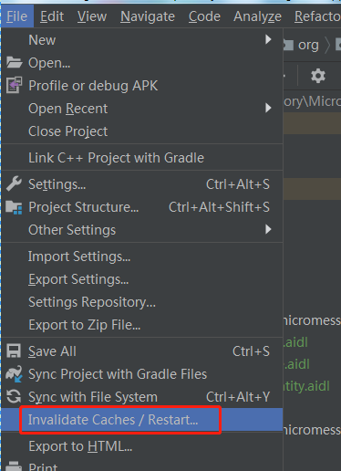

<div class="padding-tb-10 line-height">
    今天遇到很奇怪的问题，startService无论如何都无法启动Service，检查AndroidManifest.xml没有问题，反复看了代码
    <br>
    
    <br>
    没有问题啊！最后clean下项目不行，rebuild也不行，重启AS不行，重启手机还是不行，突然想起
    <br>
    
    <br>
    就可以了
</div>